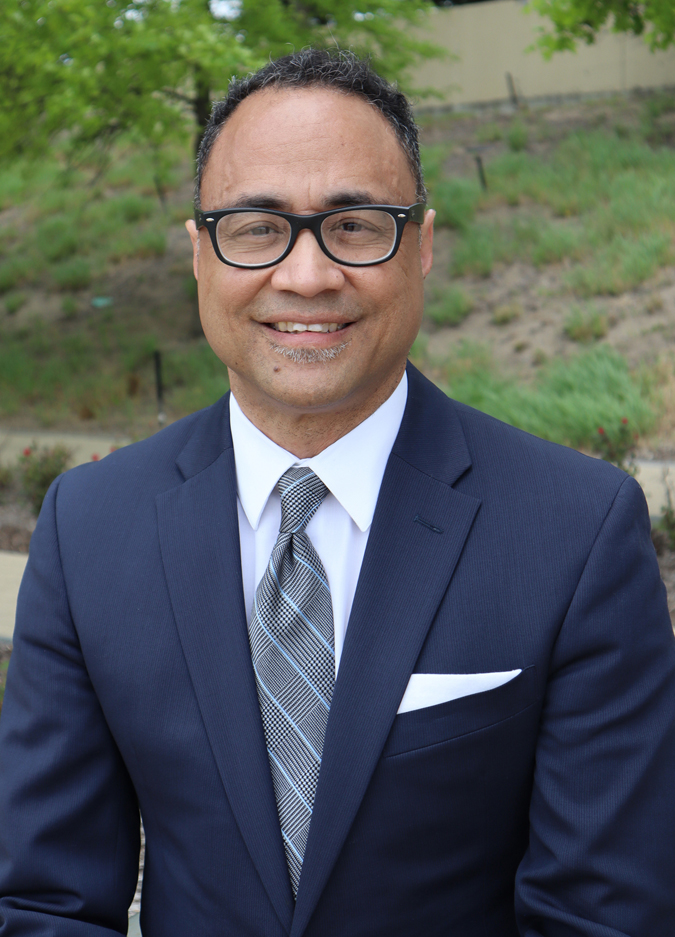

About Us
STAND Up for Black Lives+ Prairie Village is a grassroots coalition of concerned citizens committed to the belief that diversity makes our city a better place to live by humbly seeking compassion and justice for all our neighbors.

Pictured from top to bottom and left to right: Gretchen Neis, Dr. George R. Williams, Trudy Williams, Wandra Minor, Pastor Dennis and Sherri Solis, Jamie Ledbetter Lovern, David Mohammad, Michael and Melissa Furnero, Samantha Feinberg and not pictured is Rebecca Reece and Sydney Williams.

Dr. George R. Williams, President of STAND Up for Black Lives
Prairie Village Diversity Committee Member
Prairie Village Civil Service Board
Johnson County NAACP Press and Publicy Member
Pastor Dennis Solis, First Vice President
Michael Funaro, Second Vice President
Gretchen Neis, Treasurer
Melissa Funaro, Secretary
Wandra Minor, Member Representative
Sydney Williams, Student Reprentative
Healing the Cancer of Racism and Discrimination in Prairie Village
by Dr. George Williams
Jesse Clyde (J.C.) Nichols was born in 1880 in the free state of Kansas. He transformed Kansas City by building the stunning Country Club Plaza and developing attractive tree-lined residential subdivisions where homes continue to appreciate in value nearly a century later. But for decades, Nichols perpetuated the ugly cancer of racism and discrimination that has had a long lasting effect on housing, education and the economics of African Americans in greater Kansas City. In 1948, two years before his death from a physical cancer, the Supreme Court in the Shelley Vs. Kraemer case struck down the racially restrictive housing covenants.
I moved to this community because I wanted the same thing that any other resident wants for their children, safety and education. But for nearly two decades I have been a resident of a city whose homes have these cancerous covenants and a climate of unwelcome. And while there are brief seasons the cancer is ignored as if it went into remission, horrific events like, the murder of Mr. George Floyd by law enforcement become a relapse with a vengence.
After attending a Kansas City, MO and Kansas City, KS rally together with Pastor Dennis Solis and his wife Sherri, Dennis had the ideal to do a Prairie Village rally to speak out against the injustice. He shared it with my wife Trudy and I who were eager to help organize the event. Trudy was instrumental in bring key leaders and students to the table and with the help of the adhoc team over 2,000 people attended. The sight was more beautiful than any building errected by J.C. Nichols. A city with an ugly history showed how beautiful it is when diverse people unite in sorrow, compassion and love to heal the cancer of racism and discrimination.